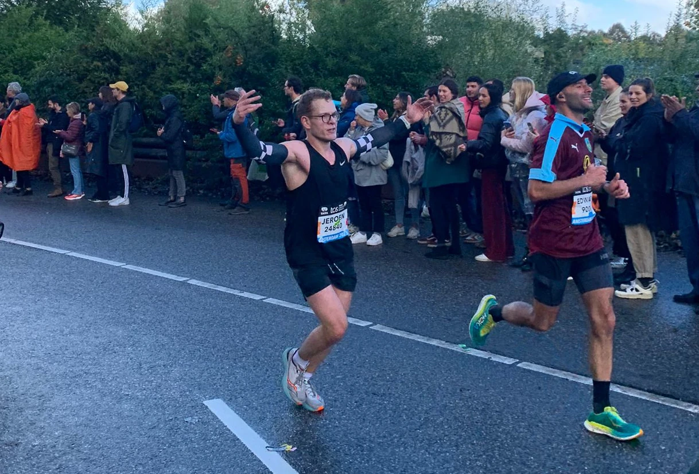

Race Report: Amsterdam Marathon 2023
TCS Amsterdam Marathon
A race report describing my experience running my first marathon, the TCS Amsterdam Marathon.
Race Information
- Name: TCS Amsterdam Marathon
- Date: Oct 15, 2023
- Distance: 42,195 KM
- Location: Amsterdam, Netherlands
- Website: https://www.tcsamsterdammarathon.eu/
- Time: 03:28:43
Goals
| Goal | Description | Completed? |
|---|---|---|
| A | Sub 3:30 | Yes |
| B | Sub 3:45 | Yes |
| C | Sub 4:00 | Yes |
Splits
| Kilometer | Time | Pace |
|---|---|---|
| 5 | 00:24:39 | 04:56 min/km |
| 10 | 00:48:47 | 04:50 min/km |
| 15 | 01:13:16 | 04:54 min/km |
| 20 | 01:37:31 | 04:51 min/km |
| 21.1 | 01:42:52 | 04:53 min/km |
| 25 | 02:01:50 | 04:52 min/km |
| 30 | 02:26:07 | 04:51 min/km |
| 35 | 02:51:37 | 05:06 min/km |
| 40 | 03:17:34 | 05:11 min/km |
| 42.2 | 03:28:43 | 05:04 min/km |
Training
My journey to the TCS Amsterdam Marathon began when my “little” brother and I signed up for the Almere City Run, a 10-kilometer race on Sunday, June 18, 2023. With only two weeks of training under our belts, it was a leap into the world of running events. Surprisingly, I finished the race in 00:49:37, a personal best at the time. This experience ignited a newfound passion for participating in races, and I knew I wanted to set my sights on a greater challenge - a marathon.

I made the commitment and purchased the Garmin Forerunner 965 watch, equipped with a built-in training plan feature. I scheduled the TCS Amsterdam Marathon, which was going to take place on October 15th, in the watch and it generated a training plan for me. The training plan was quite comprehensive and consisted of different phases: Base-, Build-, Peak-, Taper-, and Recovery Phase. I ran almost daily following suggested workouts, each serving a specific purpose. These included base runs to establish a solid foundation, recovery runs to aid in recovery, tempo runs to work on pacing, and interval runs to improve speed and strength, , and the long runs, a crucial part of marathon preparation, were scheduled exclusively on Saturdays. These long runs provided the opportunity to build endurance and stamina, essential for the marathon distance. What made these Saturday runs even more special was that I usually ran them in the company of my neighbor/coach, an experienced runner and triathlete. His insights and tips were invaluable throughout my training journey.
My neighbor/coach shared his expertise on various aspects, from the benefits of carbon-plated shoes to staying adequately hydrated during long runs. He introduced me to the concept of training with fueling gels, emphasizing the importance of proper nutrition during the marathon. He also gave me insights into the TCS Amsterdam Marathon course, allowing me to mentally prepare for the race.
Encouraged by his guidance, I decided to sign up for additional races as part of my training regimen. First, I participated in the Dam tot Damloop, a 16.1-kilometer race on September 17, 2023. This race provided a unique experience, running alongside thousands of fellow participants, a stark contrast to the smaller Almere City Run. The support of the spectators along the course was electrifying, and I may have indulged in celebrating with them during the race, which made for a memorable experience. Notably, my performance saw a substantial improvement, with my best 10-kilometer time during the race recorded at 42:27, a significant leap from the Almere City Run.
Following the Dam tot Damloop, I challenged myself further by taking on the 30 van Almere, a 30-kilometer race that occurred on September 24, 2023. I completed this race in 2:25:57, a result that left me exceptionally satisfied. However, it came with a minor setback, as my left knee started to bother me after the race, and this was a mere few weeks away from the TCS Amsterdam Marathon.
In the two weeks leading up to the marathon, I attempted to continue running, but my knee pain persisted. Fearing that pushing through could jeopardize my marathon performance, I decided to stop running and instead tried cycling on Zwift (turns out I enjoy this quite a bit as well - prefer running though! ;) ). Fortunately, cycling did not exacerbate the pain, allowing me to maintain my cardio fitness. The day before the marathon, I opted for a 6-kilometer run at a slow pace, which went reasonably well.
Pre-race
Following the tradition I had heard from experienced runners, I made sure to dive in to a big plate of pasta the night before the race. I also made sure that I had everything ready for the big day. The morning was going to be early, so I didn’t want to leave anything to chance. I laid out my running attire and my carbon-plated shoes, as recommended by my coach, were neatly placed beside my gear.
Porper nutrition and hydration are very important. I packed my fueling gels, making sure to have a total of six. I planned to consume one gel before the race to provide an initial boost of energy. To maintain my energy levels during the race, I had strategically timed the intake of the remaining gels, taking one every 7 kilometers.
I woke up at 5 am on race day, had my breakfast and made my way to Amsterdam by train.
Race
Race day arrived with an unexpected twist. Just half an hour before the TCS Amsterdam Marathon was set to begin, a sudden hailstorm hit the city. This climatic curveball introduced a chilling factor that would set the stage for the entire race. The air felt bitterly cold, sending shivers through the assembled runners.
Due to the significant number of participants, the race organizers decided to implement two separate starting locations. Location A had its starting point within the iconic Olympic Stadium, while my designated starting point was at location B, just outside the stadium. I was part of the Orange wave, a group of runners who estimated their finishing time to be between 3:30 and 4:00 hours. Our wave was scheduled to commence at 09:11.
To ensure that I had the best chance of achieving my 03:30 goal, I initially positioned myself next to the pacers who were aiming for that very time. However, just before the race was set to begin, the pacers were moved to start with the earlier wave (up to 3:30), leaving me without my intended pacing support. It was a moment of adaptation and resolve; I had to start the race by pacing myself. Fortunately, my training had instilled the habit of relying on my watch to maintain my desired pace, which was just a shade faster than 5:00 per kilometer.
At precisely 09:11, the race began. I set out with the plan to run just slightly quicker than the 5:00 per kilometer pace to stay on target. My watch was set to track my average pace, and I checked it periodically to ensure I was on track.
The first 30 kilometers of the race progressed smoothly for me. I made sure to stop at every hydration station to grab a cup of water (unintentionally skipping just one, damn :( ) and consumed a gel every 7 kilometers, following my practiced routine.
However, between the 13th and 25th kilometers, the route took us alongside the Amstel river. This section proved to be a monotonous stretch with limited crowd support, challenging my mental resilience. But I found solace in knowing that on the other side, a jubilant and cheering crowd awaited. I may have celebrated a bit there, to the disappointment of my brother and his girlfriend as I completely skipped them, woops! - but in my defence it is quite difficult to notice if multiple people are shouting your name ;) It was here, at the 21.1-kilometer mark, that I realized I was still on schedule (01:42:52) and, most importantly, my left knee hadn’t given me any trouble. This gave me a huge boost in confidence that I was going to finish this race! :)

In the distance, I spotted flags with the number “03:30”, signaling the pacers I had lost at the start. The thought of catching up to them briefly crossed my mind, but I decided to focus on my own race and maintain my consistent pace, thanks to the buffer I had built up.
Around the 30-kilometer mark, I started to close the gap on the pacers, or so I thought.. Simultaneously, my legs began to feel heavier, and my splits slowed slightly. It was a test of mental strength. I decided not to fixate on the pacers in the distance and instead concentrated on my own running. I reminded myself of the buffer I had, and as long as I maintained a decent pace, I knew I was on track to achieve my goal time.
As many seasoned marathoners say, the last 10 kilometers are where the true test begins. Those final kilometers indeed proved to be a grueling challenge, requiring unwavering mental fortitude.
The final 5 kilometers brought us along a long bike lane, and to my delight, my coach and his wife joined on their bikes to support me. Their presence made it impossible for me to falter; I had to maintain my tempo. With just 1 kilometer to go, the iconic Olympic Stadium came into sight, and the cheers from the crowd filled the air.
Summoning all my remaining energy, I attempted to sprint the last 200 meters. To me, it looked remarkable, although it may have been more of a personal feat than a spectacle.

The TCS Amsterdam Marathon was an unforgettable experience.
Post-race
As I crossed the finish line, I took a moment to look around, admiring the Olympic Stadium and I felt a sense of accomplishment.
However, it wasn’t long before the post-race reality set in. Pain began creeping into my legs, and they stiffened suprisingly quickly. What had carried me through the grueling 42.195 kilometers was now reminding me of the immense effort I had exerted.
I exchanged congratulations with fellow runners and hobbled to one of the nearby railings. I contemplated stretching my leg muscles but quickly realized that the pain made this nearly impossible.
In search of relief and eager to retrieve my belongings, I made my way towards the exit. Along the path, I was handed a well-deserved medal as a token of my accomplishment. I also picked up some much-needed refreshments, including an AA-drink and a banana, which I quickly consumed as replenishment.
My next destination was the train station, my passage back home. The only catch was that it still lay a 10 minute walk away. Turns out it takes a bit longer with broken legs. The pain…. :(